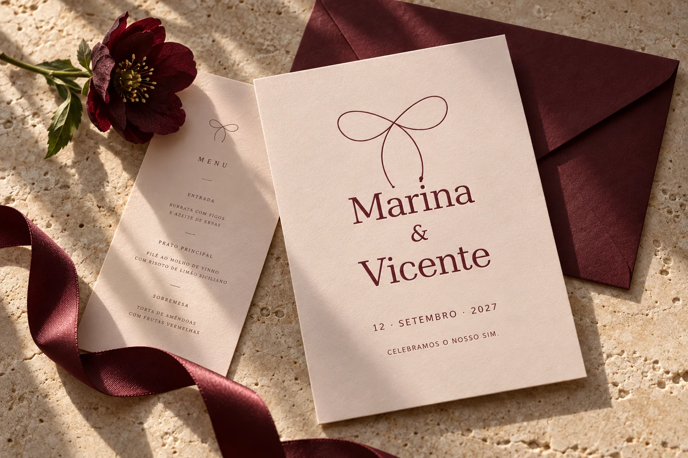
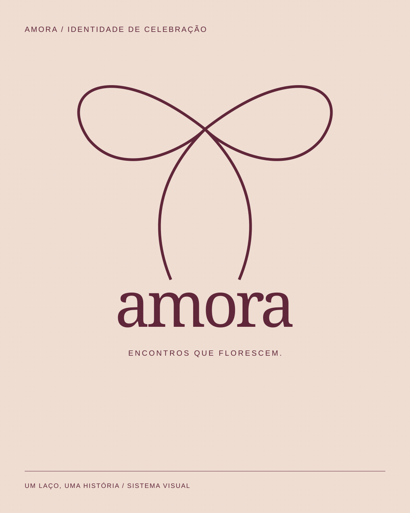
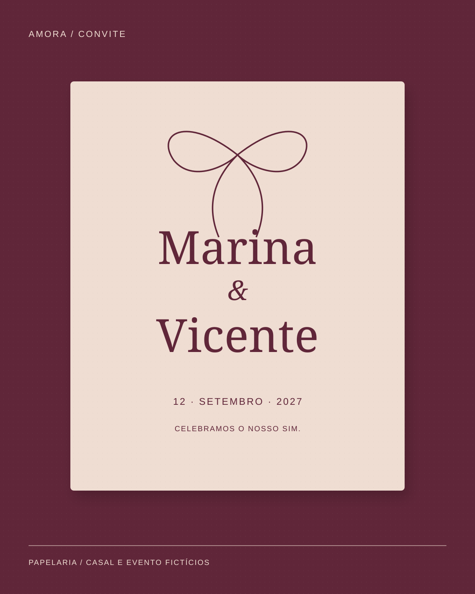
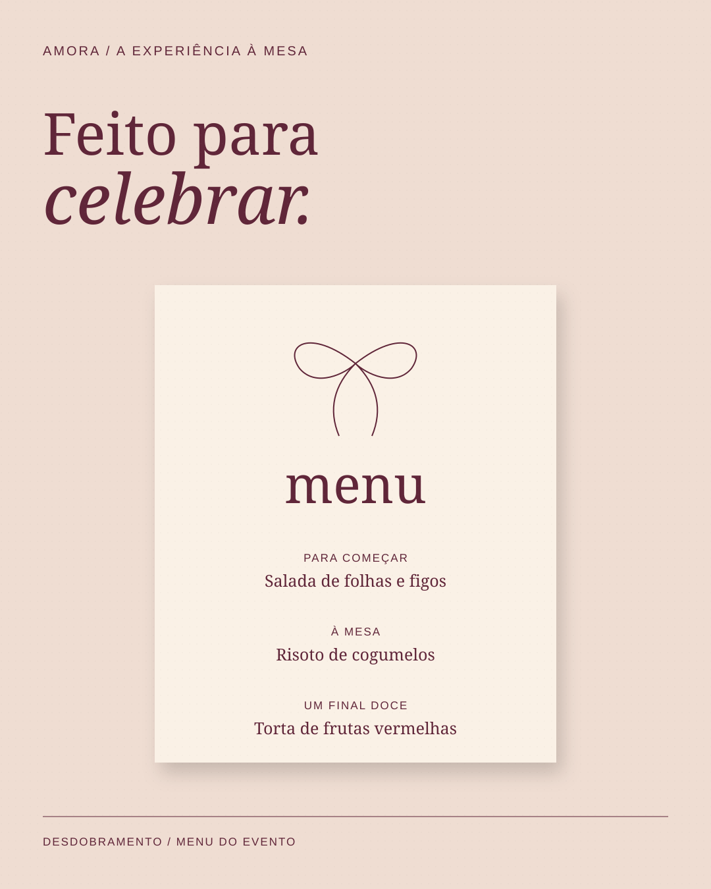

04 / ESTUDO CONCEITUAL
Amora
Um laço que atravessa a celebração.
Desenvolver uma identidade de casamento aplicável à apresentação, ao convite e ao menu.
#602639#EFDDD2#FAF1E6
01 / DECISÃO VISUAL
O laço desenhado conecta as peças. A composição do convite coloca os nomes antes das informações do evento.
02 / SISTEMA
Vinho e rosa trazem contraste; a mesma serifada mantém a voz em toda a papelaria.
03 / ESCOPO
3 peças conceituais, com SVG editável e PNG. Estudo criado com apoio de IA; sem cliente, produção impressa ou resultados comerciais atribuídos.










Marcas, casais, eventos e preços são fictícios. As aplicações de papelaria e embalagem são representações digitais; não foram produzidas fisicamente.